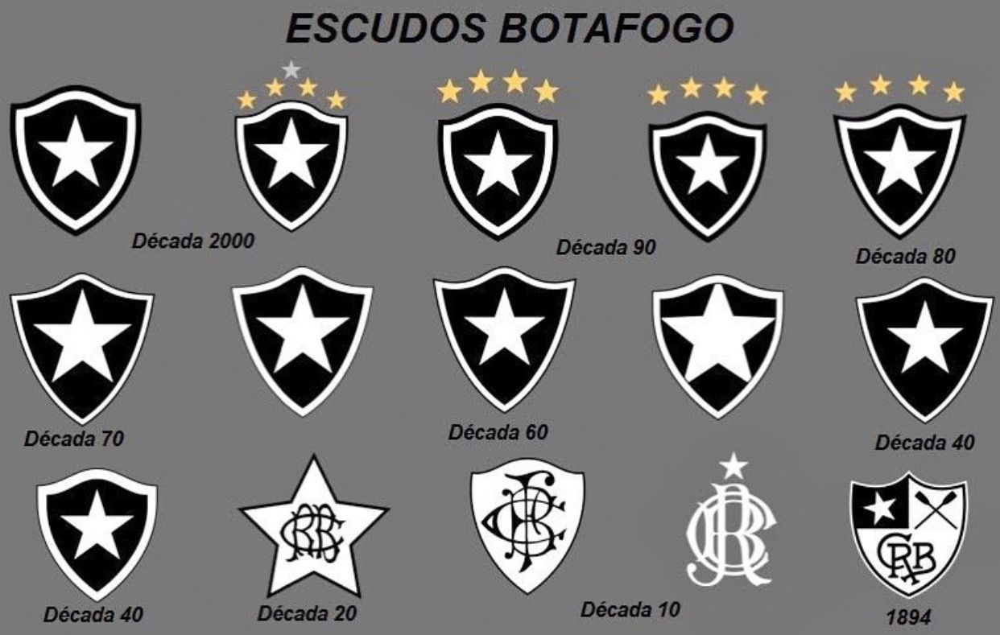
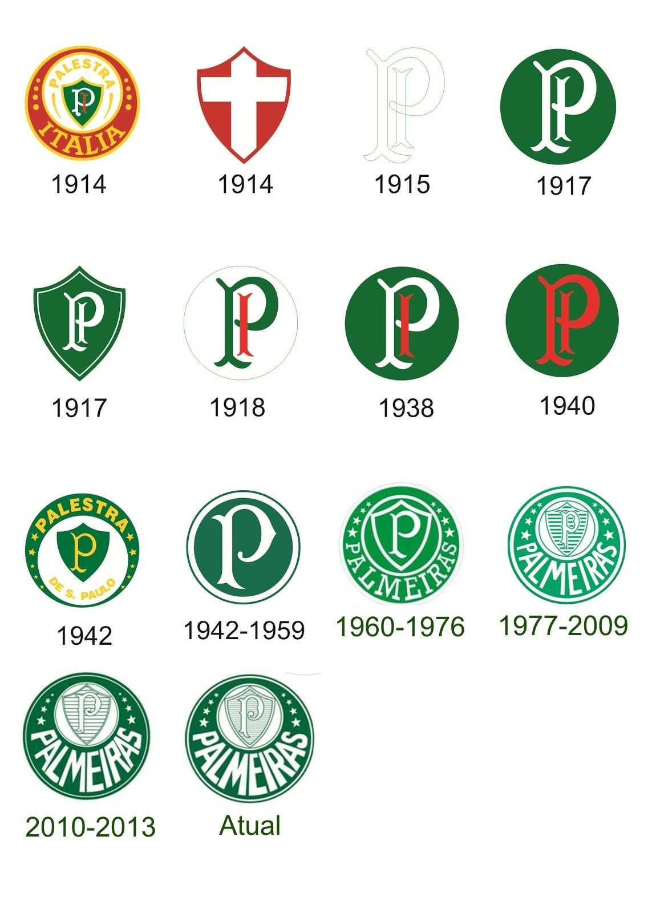
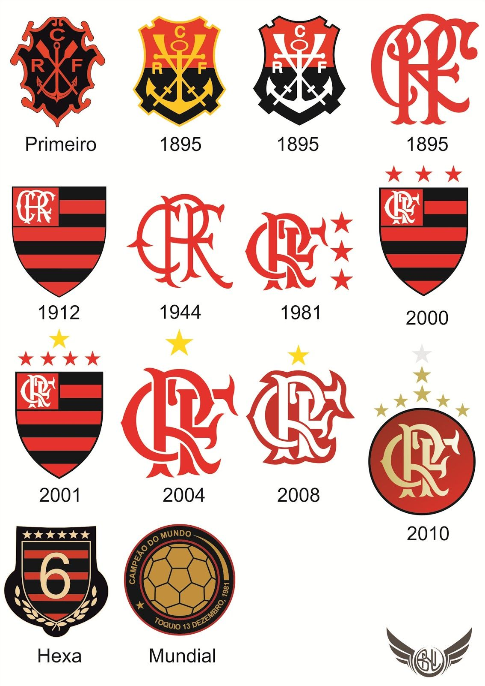
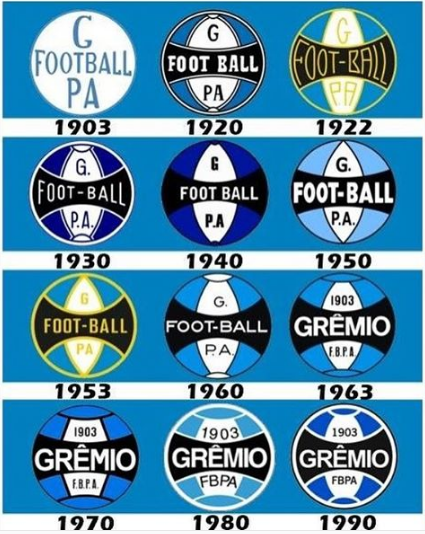
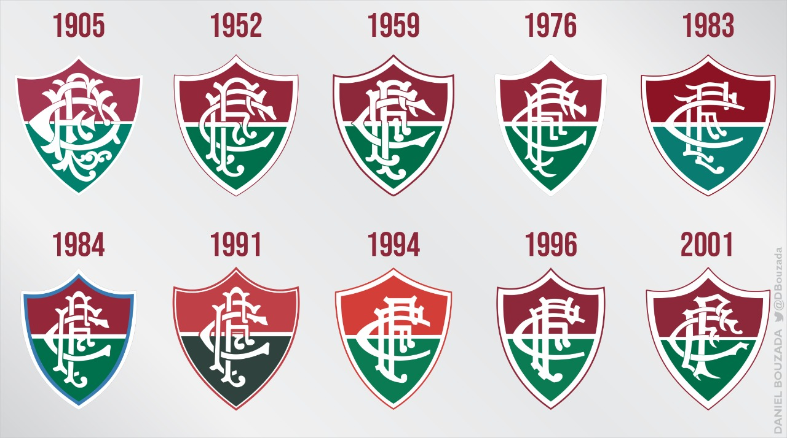
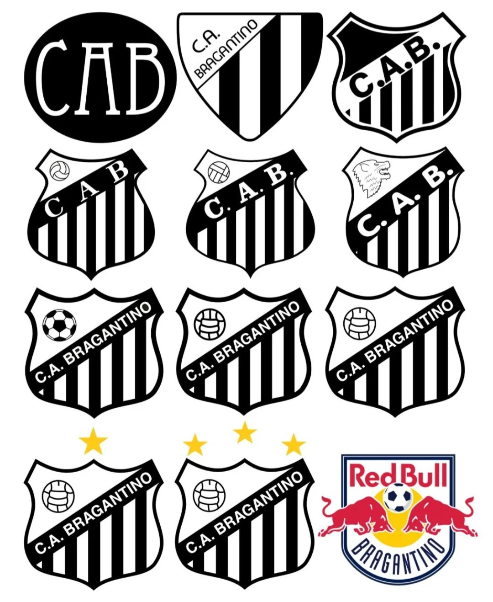
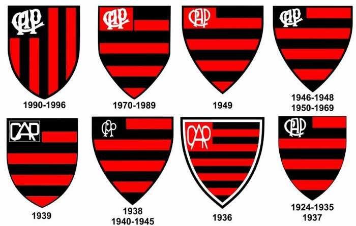
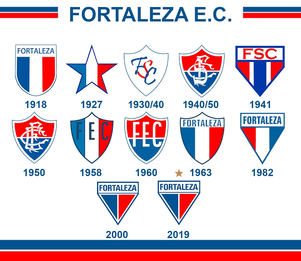
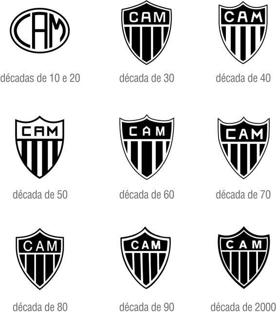
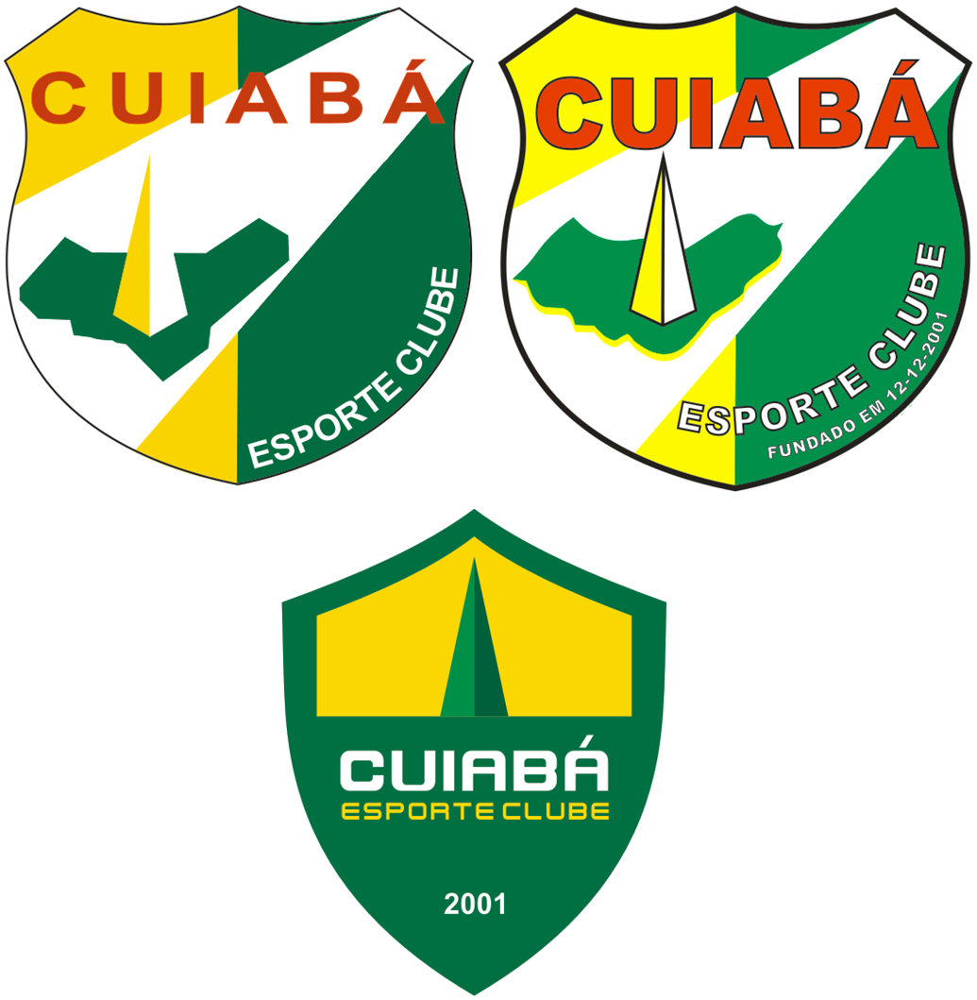

Aqui se encontrarão os DEZ primeiros da lista do grupo de Times da Serie A de 2023
| Posição | Nome do Time | Partidas |
|---|---|---|
| 1ª | BOTAFOGO | 51 |
| 2ª | PALMEIRAS | 40 |
| 3ª | FLAMENGO | 39 |
| 4ª | GRÊMIO | 36 |
| 5ª | FLUMINENSE | 35 |
| 6ª | BRAGATINO | 35 |
| 7ª | ATHLETICO-PR | 34 |
| 8ª | FORTALEZA | 32 |
| 9ª | ATLÉTICO-MG | 31 |
| 10ª | CUIABÁ | 28 |
O Botafogo foi fundado por um grupo de estudantes do Colegio Alfredo
Gomes no dia 12 de agosto de 1904. A ideia era formar um clube com a
garotada que morava no Largo dos Leoes e nas ruas Sao Clemente e
Voluntarios da Patria. O nome original era Eletro Club,
time com cores alvi-negras, mas sem a estrela solitaria. A mudanca do
nome veio rapida, um mes depois, na segunda reuniao do time por
influencia da avo de um dos fundadores - Flavio Ramos - que no meio
da reuniao nao gostou do nome Eletro Club, virou e falou para os
jovens: "morando onde voces moram o clube de voces so' pode ser
chamado Botafogo". Dito e feito as historias pitorescas sobre o
Botafogo Futebol Clube comecaram desde cedo.
FONTE

O Palmeiras surgiu no dia 26 de agosto de 1914. Fundado por imigrantes italianos, seu primeiro nome foi
Società Sportiva Palestra Italia. Em 1942, quando estava estabelecida como uma força do futebol
paulista, a equipe foi obrigada a trocar de nome, passando a se chamar Sociedade Esportiva Palmeiras em
decorrência da Segunda Guerra Mundial. O Palmeiras foi campeão paulista logo em sua primeira partida com
o novo nome. Foram, ao todo, 22 títulos estaduais. Um dos times mais famosos da história do clube
alviverde foi o chamado de "Academia de Futebol", das décadas de 1960 e 70, liderado por Ademir da Guia
- um dos poucos elencos que faziam frente ao Santos de Pelé.
FONTE

O Flamengo foi fundado em 17 de novembro de 1895 para as disputas de remo. A entrada da equipe no
futebol aconteceu em 1912. Atualmente, o time rubro-negro é o maior vencedor da história do Campeonato
Carioca, com 31 títulos. Segundo diversas pesquisas, é o clube com o maior número de torcedores do País.
Os dois principais títulos da história do Flamengo ocorreram em 1981. Comandado pelo ídolo Zico, o time
conquistou a Copa Libertadores da América, em final contra o Cobreloa, do Chile, e o Mundial
Interclubes, diante do Liverpool, da Inglaterra. Foi na década de 1980, também, que o Flamengo
conquistou o seu primeiro Campeonato Brasileiro.
FONTE

O Grêmio Foot-Ball Porto Alegrense foi fundado em 15 de setembro de 1903, em um restaurante da região
central de Porto Alegre. A equipe venceu o primeiro campeonato que disputou, a Taça Wanderpreiss, em
1905 - que voltaria a ganhar em outras sete oportunidades. O Grêmio é, junto ao Cruzeiro, o maior
campeão da história da Copa do Brasil (quatro taças). O ano de 1983 foi um dos mais marcantes da
história da equipe, com as conquistas da Copa Libertadores e do Mundial, com o então atacante Renato
Gaúcho tendo marcado os gols da vitória diante do Hamburgo, da Alemanha. Em 2005, no título da Série B,
o time teve jogo histórico contra o Náutico, a "Batalha dos Aflitos".
FONTE

O Fluminense Football Club surgiu em 21 de julho de 1902, no bairro das Laranjeiras, no Rio de Janeiro,
como o primeiro clube do Estado fundado só para o futebol. A equipe tricolor carioca foi a maior campeã
do Estadual do Rio no século XX. Seu estádio, Manuel Schwartz, sediou jogos da Seleção Brasileira entre
1919 e 1932. Entre os principais títulos do Fluminense estão a Copa Rio de 1952, os Torneios Rio-São
Paulo de 1957 e 1960, o Torneio Roberto Gomes Pedrosa de 1970, o Campeonato Brasileiro de 1984, 2010 e
2012 e a Copa do Brasil de 2007. O time mais famoso da história do clube foi a chamada "Máquina
Tricolor", liderado por Rivellino no fim da década de 1970.
FONTE

Red Bull Bragantino, também conhecido como Red Bull ou Bragantino, é um clube esportivo brasileiro da
cidade de Bragança Paulista, interior do estado de São Paulo. É controlado pela multinacional de bebidas
energéticas Red Bull.
O clube foi fundado com o nome de Clube Atlético Bragantino em 8 de janeiro de 1928, e suas cores de
origem eram o preto e o branco. Entretanto, a partir da parceria com a empresa Red Bull GmbH, em 2019,
passou a exibir também o vermelho em seu tradicional uniforme alvinegro.
FONTE

O Clube Atlético Paranaense surgiu da união de duas agremiações: o International e o América. A fusão
foi concluída em 26 de março de 1924. O primeiro título da equipe já veio no ano seguinte: o Paranaense
de 1925. Foi o primeiro de 21 troféus estaduais do Atlético - mais um Supercampeonato, em 2002. O
principal título da história do clube foi o Campeonato Brasileiro de 2001, conquistado diante do São
Caetano, com boas atuações do atacante Alex Mineiro. O time rubro-negro tem uma das melhores estruturas
de trabalho do País, com o Estádio Arena da Baixada e o CT do Caju, e é o único clube do Estado a ter
alcançado uma final de Copa Libertadores, em 2005.
FONTE

O futebol cearense realizou a sua primeira partida em 1904. Oito anos depois, em 1912, o esporte já era
praticado em larga escala no estado, mas foi só em 1918 que Alcides Santos fundou na Rua Barão de Rio
Branco o então Fortaleza Sporting Club, hoje chamado Fortaleza Esporte Clube. Alcides, que retornava da
França, escolheu as cores azul, branca e vermelha em homenagem ao país europeu.
FONTE

O Atlético-MG foi fundado em 25 de março de 1908, por 22 jovens que se reuniram no Parque Municipal, em
Belo Horizonte. O time foi o vencedor da primeira edição do Campeonato Brasileiro, em 1971 - seu único
título na competição. Também foi vice-campeão nacional em 1977 (invicto), 80 e 99. O Atlético conquistou
ainda a primeira edição do Campeonato Mineiro, que era chamado de Campeonato da Cidade à época. A equipe
alvinegra é a maior campeã do Estadual de MG, com 40 taças - 19 na versão antiga e 21 na atual. O
principal ídolo alvinegro é o atacante Reinaldo, que atuou por 12 anos no clube e é omaior artilheiro,
com 255 gols.
FONTE

Cuiabá Esporte Clube é uma agremiação esportiva brasileira com sede em Cuiabá, no estado de Mato Grosso.
O clube foi fundado em 12 de dezembro de 2001 pelo ex-jogador Gaúcho.
A história do Cuiabá começou com o ex-jogador de futebol, Gaúcho, que fundou a “Gaúcho Escola de
Futebol”, na capital mato-grossense, mais conhecida como a “Escolinha do Gaúcho”.
Em 2001, ele fundou o Cuiabá Esporte Clube para disputar os campeonatos amadores de categoria de base,
trazendo em seu brasão o obelisco do centro geodésico da América do Sul (Cuiabá está no coração da
América do Sul).
FONTE
